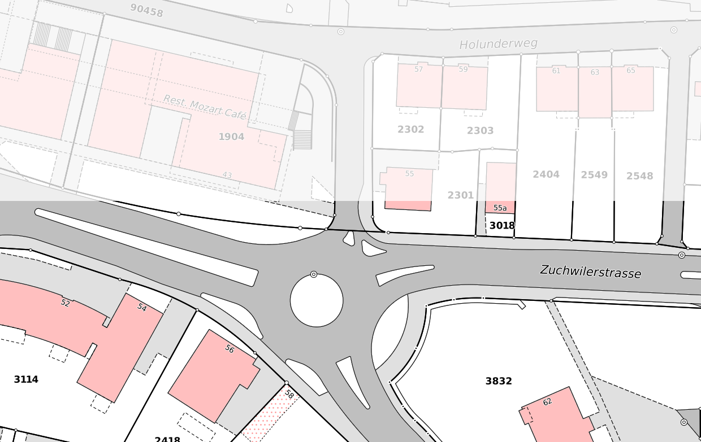

Stefan Ziegler—Amt für Geoinformation Kanton Solothurn
Stefan Ziegler—Amt für Geoinformation Kanton Solothurn
void interpolateArc(Coordinate ptStart, Coordinate ptArc, Coordinate ptEnd, double maxOverlaps) {...}
QgsGeometryQgsCircularString, QgsPolygon etc.